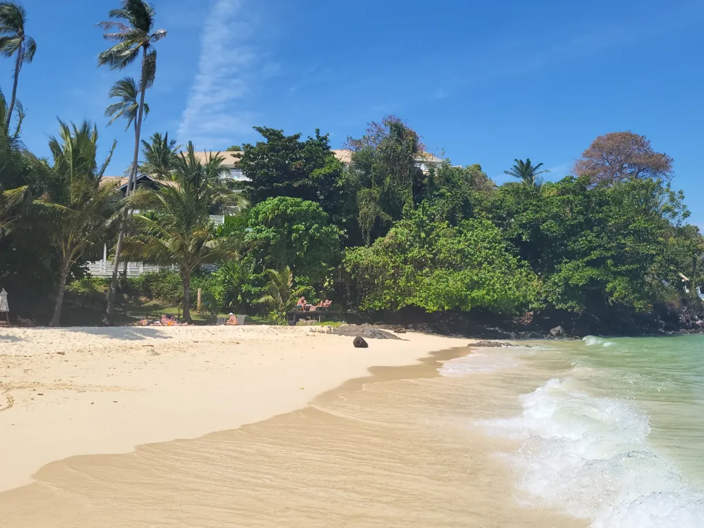
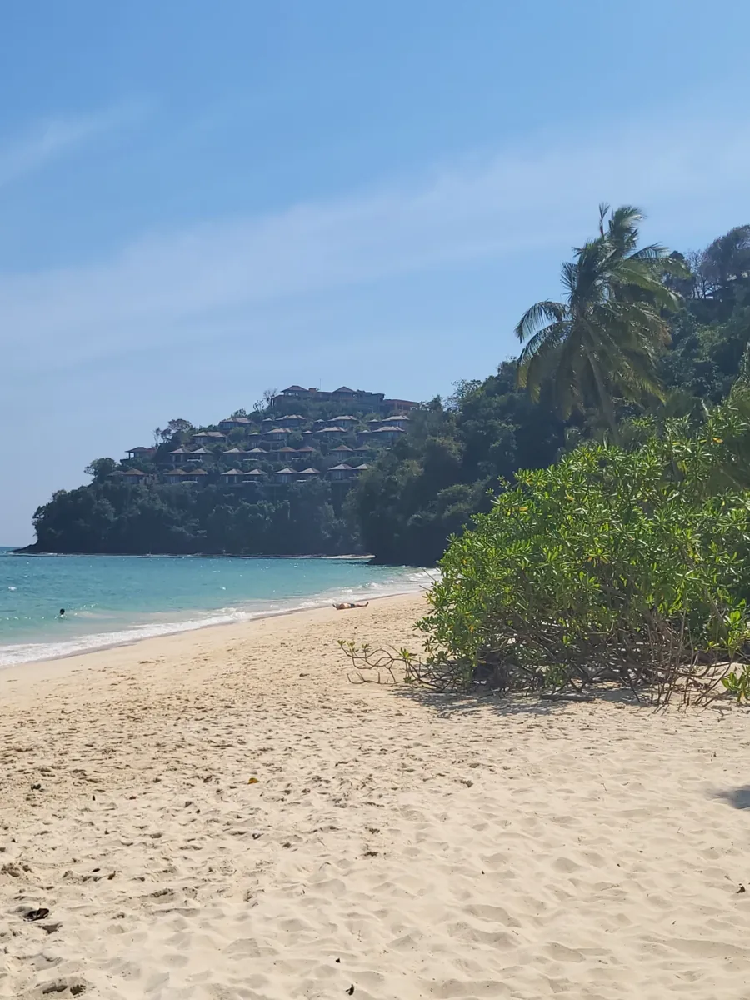
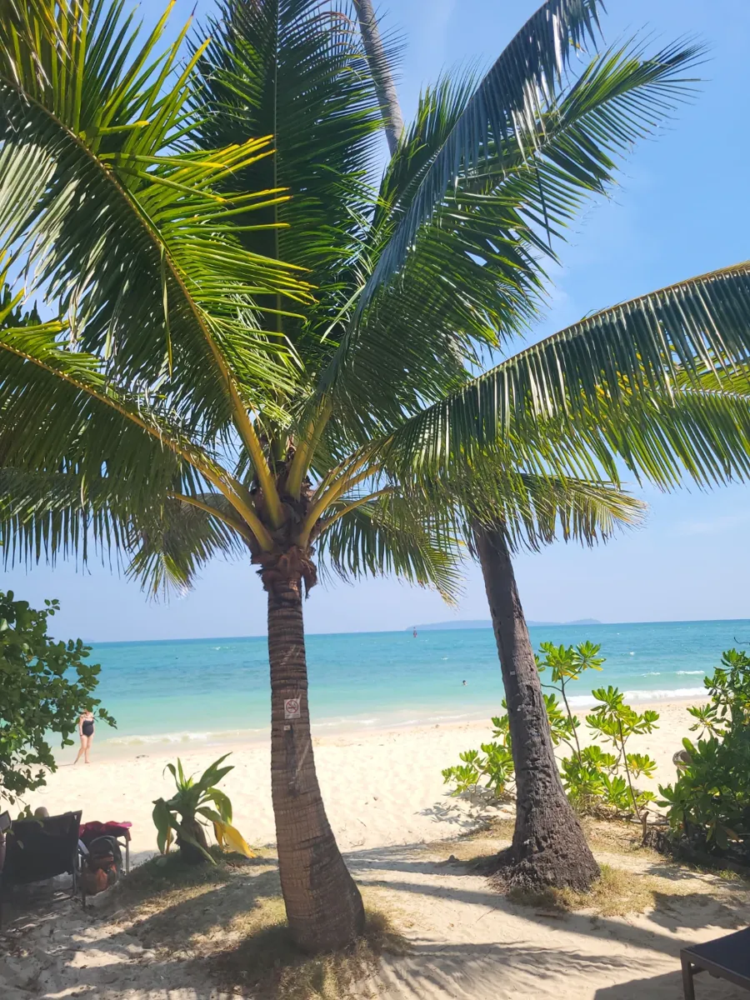

Hotel Finds / Phuket, Thailand
Personally visited · Phuket, Thailand
Kantary Bay Hotel Phuket: My Stay and How Beach Access Works
I stayed at Kantary Bay, on the quiet bayfront in Cape Panwa. The beach in my photos belongs to its sister property, Cape Panwa Hotel, where I spent my beach time.
See my beach photos
Getting to the beach from Kantary Bay
I took the free shuttle from Kantary Bay to Cape Panwa Hotel. Once there, I rode the funicular down to the private beach.
Evenings on the bay
Back at Kantary Bay, I could walk to the village restaurants and the evening market. That’s what I liked about staying on this side of the cape: a quiet spot by the water with dinner a short walk away.
My photos of the beach at Cape Panwa Hotel

